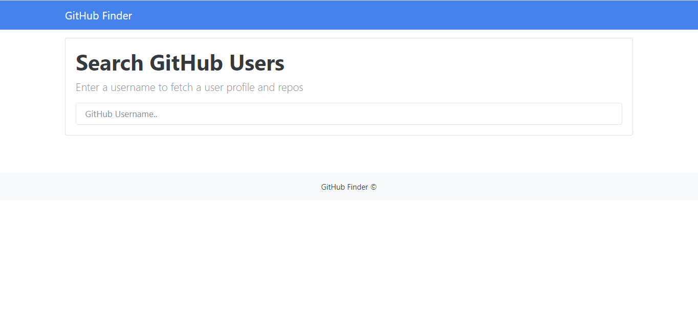

GitHub Finder
I started this project in october 2020. Iam the single developer worked for this project.
This is used for taking information from the GitHub by using GitHub API, and display on local machine.
In this project, it not only display's user information but also latest repos of that user.
I worked on this project for 5days.
GitHub Link: GitHub Finder
Technologies:
- - HTML5/CSS3
- - Bootstrap
- - JavaScript
- - GitHub API
Results Fields:
Github search results
Showing github repos.